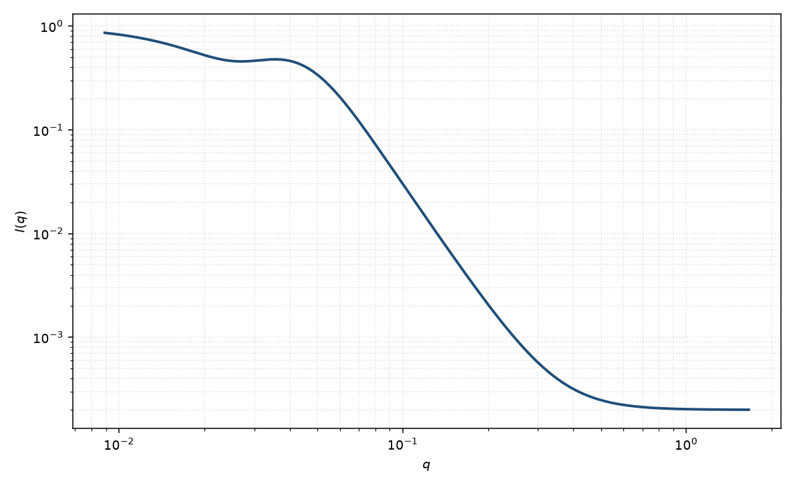

统一幂律–Rg
unified power Rg
适用场景
层级结构（聚集体上还有聚集体、链段上还有整链）需要一套以上 $R_g$ 与幂律时，用 Beaucage 统一指数/幂律。每一层是 Guinier 加上用误差函数截断的幂律，多层直接相加。
适合气凝胶、支化高分子、炭黑与多尺度孔。若只有一层 Guinier+一段幂律，Guinier–Porod 通常更省参数。出现几何振荡极小时，应回到具体形式因子。
物理图像
一层写成 $G\exp(-q^2 R_g^2/3)$ 加上 $B[\mathrm{erf}(q R_g/\sqrt{6})]^3/q^P$。误差函数保证幂律在 $qR_g\ll 1$ 被关掉，从而不破坏 Guinier 坪。多层把下一层的 Guinier 再叠上去。
这是包络描述，不编码外形振荡。磁性通道可以有自己的 $\{G,R_g,P\}$。
示意图

核心公式
Beaucage 单层统一函数
$$I(q)=G\exp(-q^2 R_g^2/3)+B\left[\frac{\mathrm{erf}(q R_g/\sqrt{6})}{q}\right]^P+B_{\mathrm{kg}}.$$多层对 $i=1,2,\ldots$ 求和。$P$ 为该层幂律指数（Porod 为 $4$，质量分形为 $D_m$）。
参数表
| 参数 | 符号 | 含义 | 单位 | 典型范围 |
|---|---|---|---|---|
| 回转半径 | $R_g$ | 该层 Guinier 尺寸 | Å | 10–1000 Å |
| Guinier 幅度 | $G$ | 该层前向幅度 | 与强度单位一致 | 与数密度、衬度相关 |
| 幂律幅度 / 指数 | $B$, $P$ | 截断幂律的前置与指数 | 与强度单位 / 无量纲 | $P$ 通常 $1$–$4$ |
| 标度 / 本底 | $\mathrm{scale}$, $B$ | 前置因子与常数本底 | 与强度单位一致 | 实验相关 |
拟合注意
取向：有效 $P$ 与 $R_g$ 是粉末平均后的标量。取向棒/片应改用带 $s$ 的 Guinier–Porod 或几何模型。
多分散使层级边界变糊，$G$ 与 $B$ 的约束关系被破坏。磁性：磁层级不必与核层级一一对应。
可辨识性：两层以上参数极易交换。没有跨越两个转折的宽 $q$ 窗口时，不要增加层数。勿与 Hammouda 模型在同一段上同时自由拟合。
相近模型
- Guinier–Porod — 单层、交叉点连续的另一套衔接。
- Guinier — 只拟合最低一层的 $R_g$。
- 分形 — 建造块加关联截断，而不是经验层级。
参考文献
- Beaucage, G. Approximations leading to a unified exponential/power-law approach to small-angle scattering. J. Appl. Cryst. 1995, 28, 717–728. DOI: 10.1107/S0021889895005292